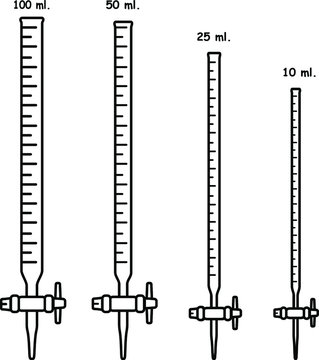

Burette:
It is a long graduated glass tube of uniform diameter fused with a glass stop-cock or rubber tube with
pinch cock at the lower end. The capacity of burette may be 10, 25 or 50 ml and Also 100ml.
A burette (also buret) is a vertical cylindrical piece of laboratory glassware with a
volumetric graduation on its full length and a precision tap, or stopcock, on the bottom.
It is used to dispense known amounts of a liquid reagent in experiments for which such
precision is necessary, such as a titration experiment. Burettes are extremely precise:
class A burettes are accurate to ±0.05 mL.
Using a Burette
The precision of a burette makes careful measurement with a burette very important to
avoid systematic error. When reading a burette, the viewer's eyes must be at the level of
the graduation to avoid parallax error. Even the thickness of the lines printed on the
burette matters; the bottom of the meniscus of the liquid should be touching the top of
the line you wish to measure from. A common rule of thumb is to add 0.02 mL if the
bottom of the meniscus is touching the bottom of the line. Due to the precision of the
burette, even a single drop of liquid hanging from the bottom of a burette should be
transferred to the receiving flask, usually by touching the drop to the side of the
receiving flask and washing into the solution with the experimental solvent (usually
water). Through careful control of the stopcock and rinsing, even partial drops of liquid
can be added to the receiving flask.